Префектура Кагава · Аягава · Стекло
Стеклодув Масахиро Тай: посуда, которой хочется пользоваться каждый день
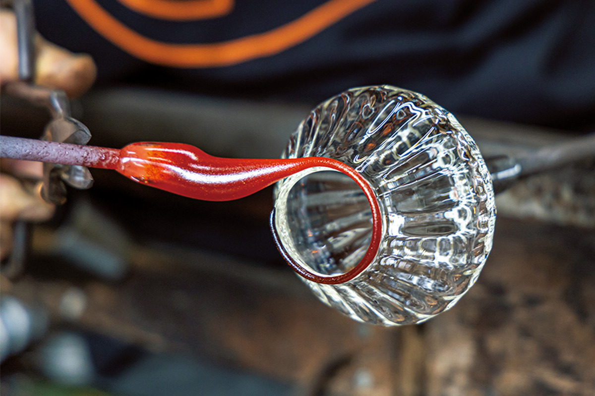
Чаши и стаканы Масахиро Тая хочется взять в руки: у них толстый «пухлый» край и янтарная кайма, как у вещи с историей. В мастерской «Гласстайм» в посёлке Аягава он делает стекло для повседневного стола.
Мастерская
Две печи, две помощницы и двадцать чаш в день
Мастерская «Гласстайм» стоит одна посреди полей в центральной части Кагавы. Масахиро Тай и две помощницы работают так слаженно, что со стороны это похоже на один непрерывный жест: он формует прозрачное стекло, а помощница кладёт сверху раскалённое до красного цвета стекло. Чаша «ринка-мору» с янтарной каймой по лепестковому краю рождается именно здесь.
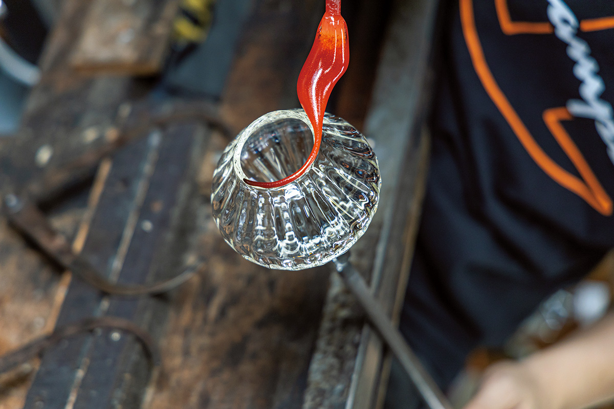
В стекло Тай пришёл случайно. Студентом Университета искусств и наук Курасики он заглянул в мастерскую Синдзо Котани, известного стеклом Курасики, увидел сложенную вручную кирпичную печь и заинтересовался. Позже он открыл свою мастерскую в родной Кагаве и сам ходил по городским магазинам, предлагая свои работы, но стиль не складывался: он делал то одну форму, то другую и всё искал.
Всё изменилось, когда во время таких визитов ему понравился один антикварный магазин и он решил сделать посуду, которая подошла бы этому магазину. Так и появилась серия «ринка-мору». Если смешать в стекле металлический порошок, край меняет цвет и становится янтарным, а от пропорции порошка зависит насыщенность оттенка. Сегодня, кроме янтарной, есть и тёмно-зелёная серия.
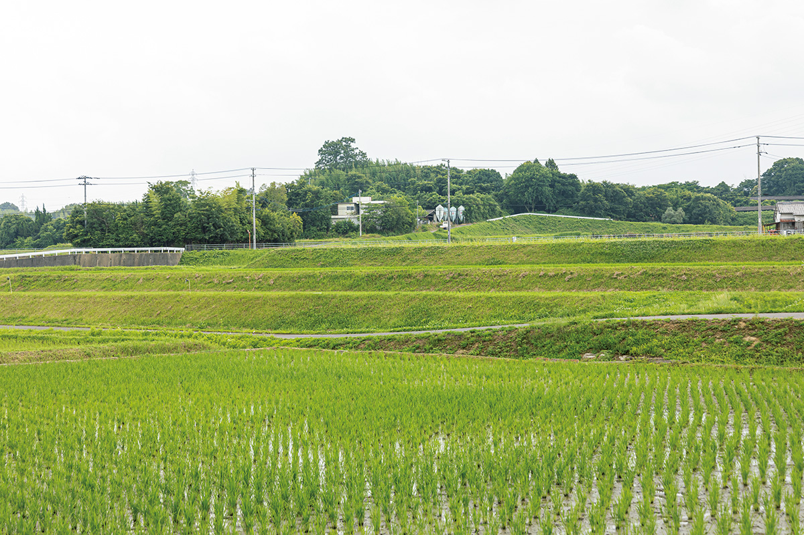
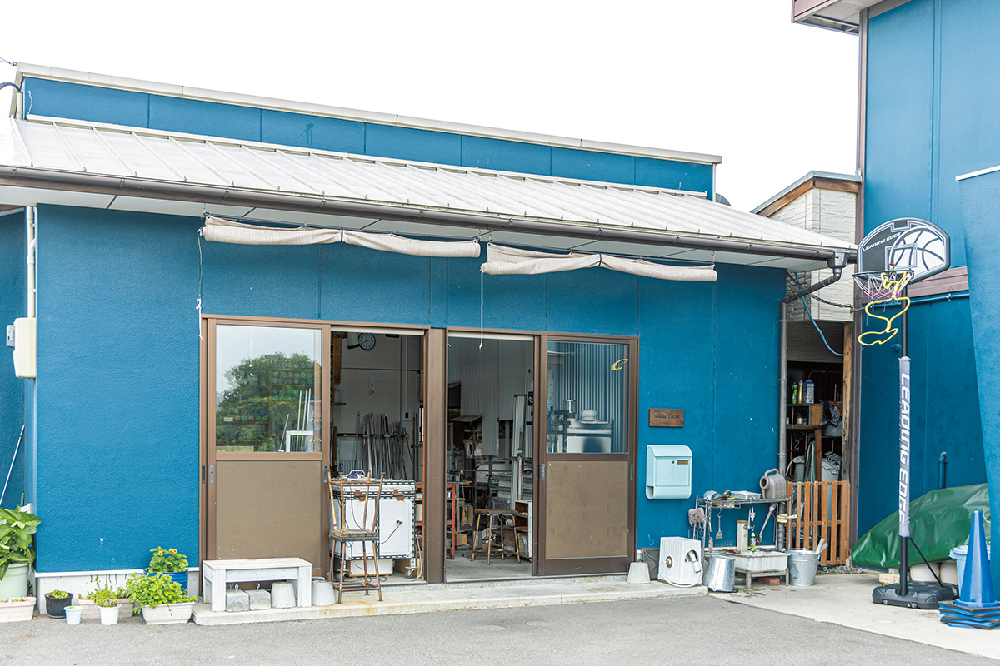
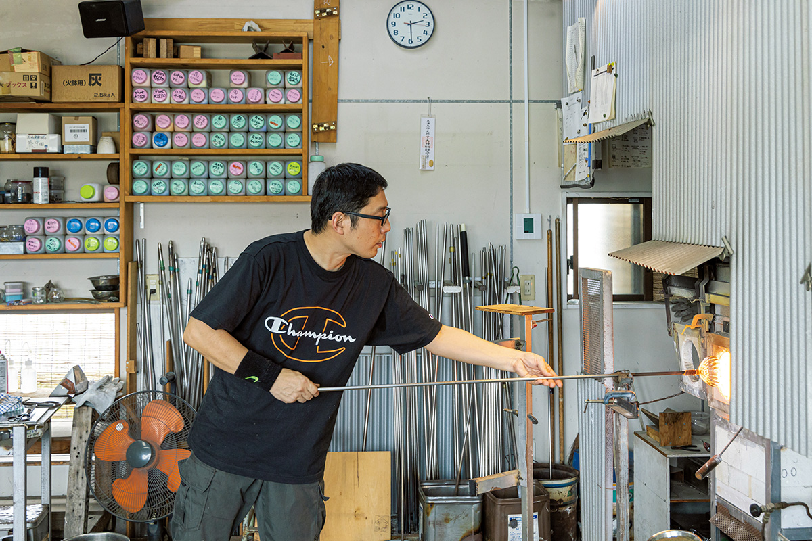
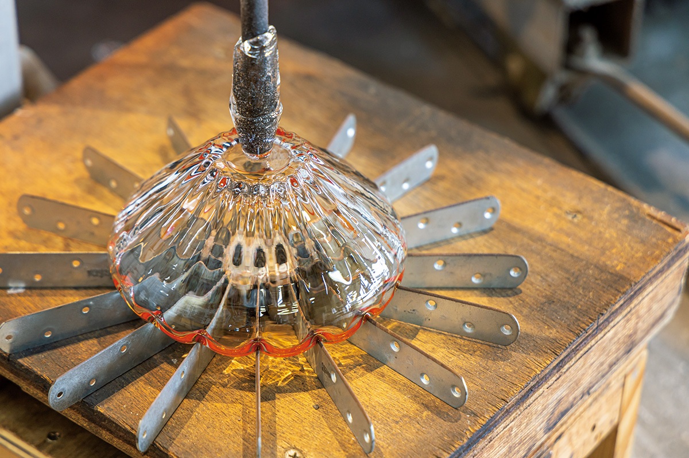
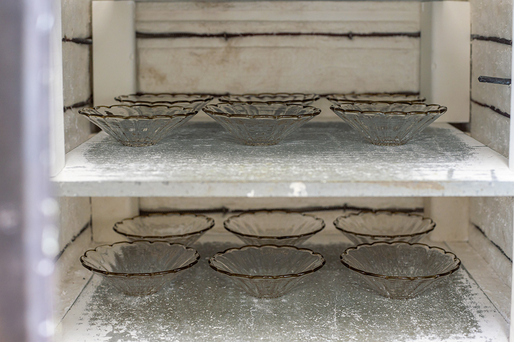
Посуда Тая сдержанна, но у неё заметная толщина и хорошая устойчивость. Опытные образцы он обязательно пробует в деле: смотрит, как блюдо выглядит, удобно ли донести посуду до стола, и учитывает замечания жены.
«Я сам, когда пил из стекла, всё время боялся его разбить. Но мне хочется делать посуду для повседневной жизни, чтобы ею пользовались свободно. Поэтому и думаю о балансе толщины и веса».
Масахиро Тай
За этими словами стоит наставление учителя, Синдзо Котани.
«Делай не то, что поражает, а то, что трогает людей. Так мне сказали».
Масахиро Тай о словах своего учителя
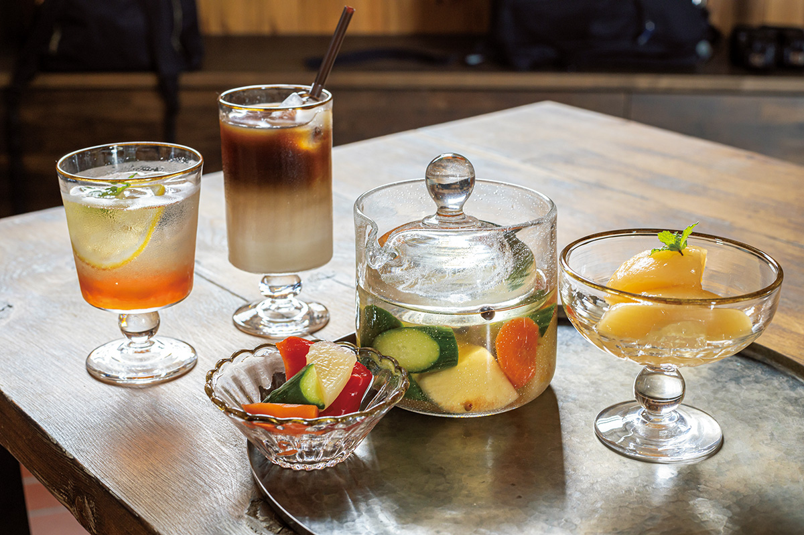
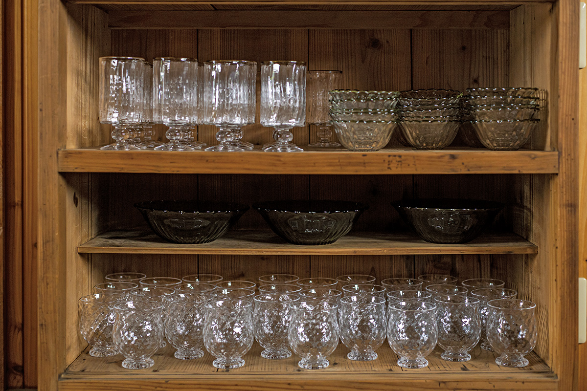
Три вещи
Посуда для будничного стола
Плоская чаша «ринка-мору»
Форму придумали для горки колотого льда с сиропом, но в ней хорошо смотрится и скромный овощной гарнир о-хитаси: поставьте чашу в центр стола, и обычный ужин станет наряднее.
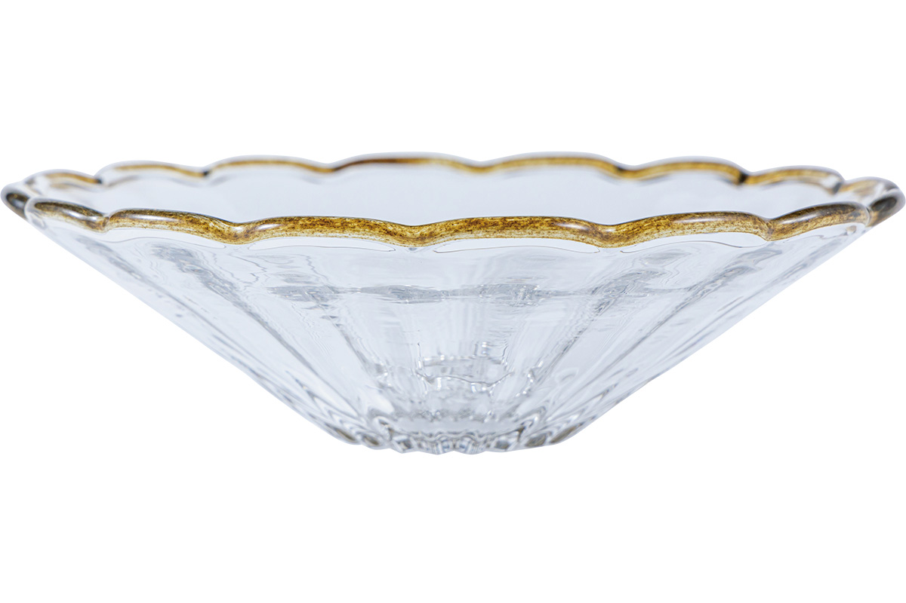
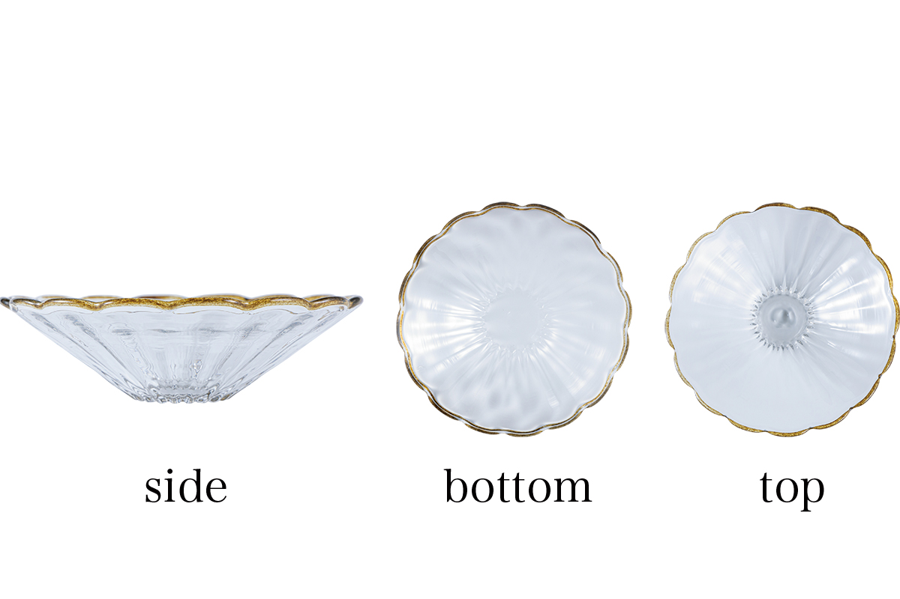
Плоская чаша «ринка-мору»
- Мастер
- Масахиро Тай, мастерская «Гласстайм»
- Материал
- стекло
- Размер
- диаметр 150 мм, высота 45 мм
- Вес
- 220 г
- Цена
- 3 850 иен
Стакан для кафе о ле
Пробный образец наделал шума в социальных сетях и превратился в постоянную вещь. Центр тяжести смещён вниз, поэтому стакан устойчив и падает разве что нарочно.
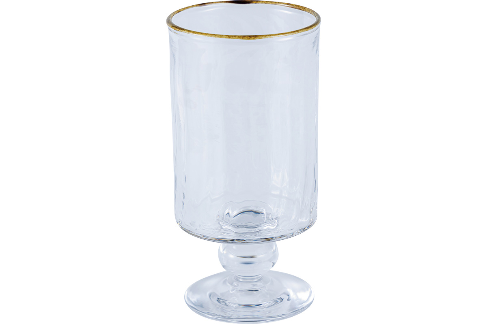
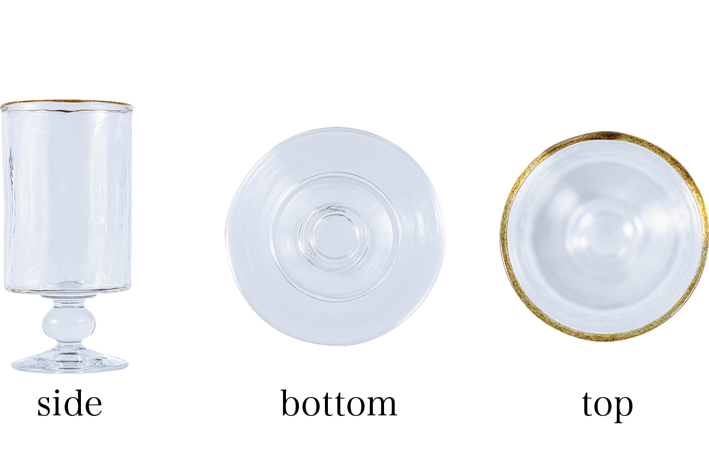
Стакан для кафе о ле
- Мастер
- Масахиро Тай, мастерская «Гласстайм»
- Материал
- стекло
- Размер
- диаметр 66 мм, высота 137 мм
- Вес
- 230 г
- Цена
- 6 600 иен
Малая чаша «ринка-мору»
Толстая чаша размером с ладонь подходит и для японских закусок, а поскольку она стеклянная, её можно подать с мороженым перед десертом. Случаев поставить её на стол найдётся много и в японском, и в европейском меню.
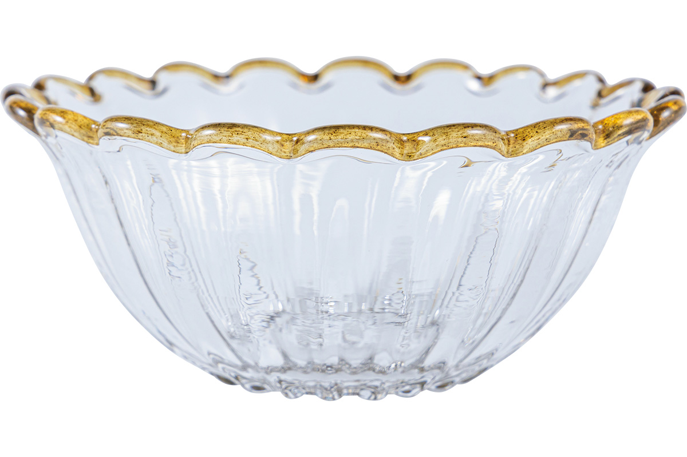
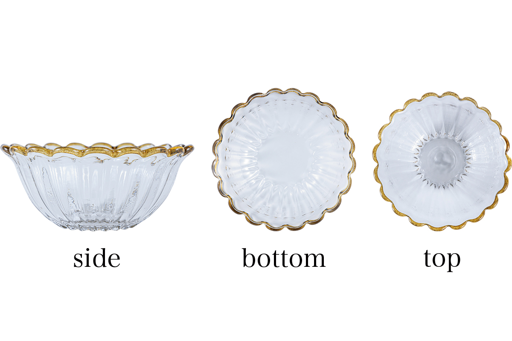
Малая чаша «ринка-мору»
- Мастер
- Масахиро Тай, мастерская «Гласстайм»
- Материал
- стекло
- Размер
- диаметр 105 мм, высота 45 мм
- Вес
- 135 г
- Цена
- 3 300 иен